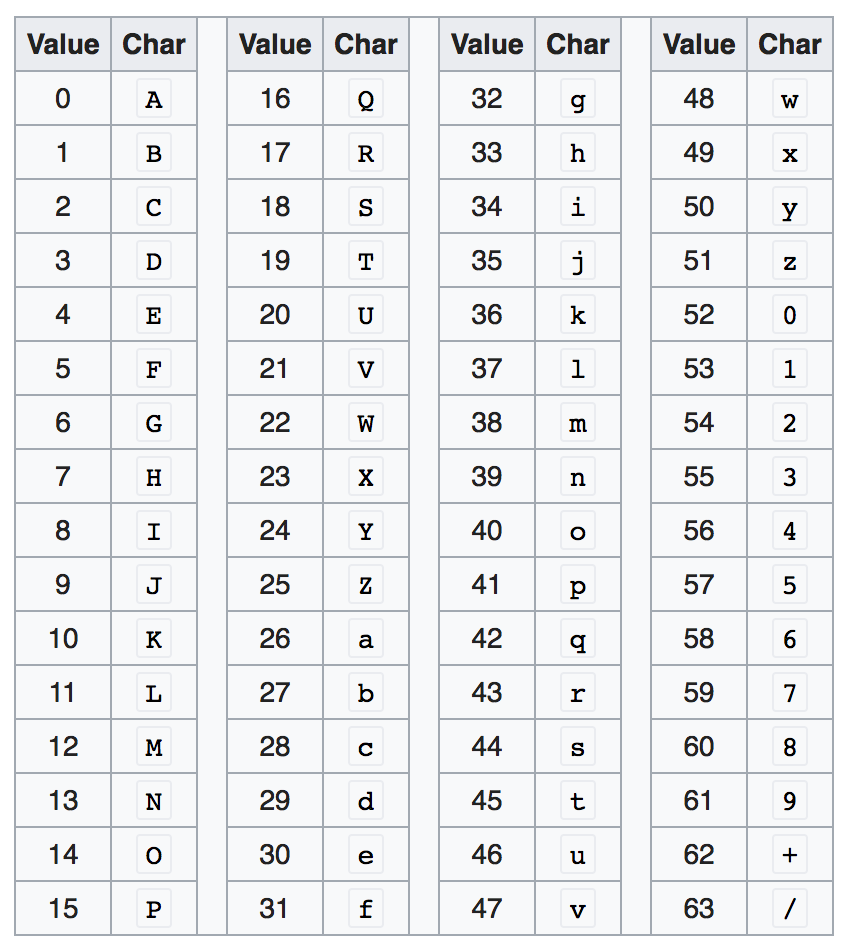
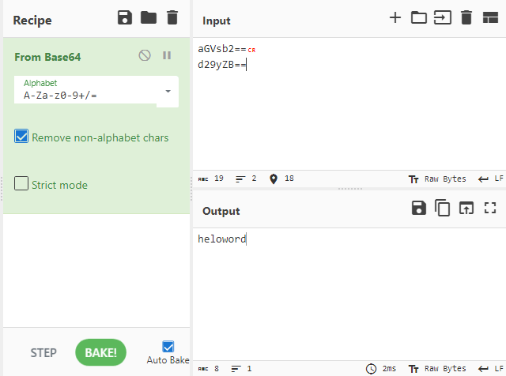
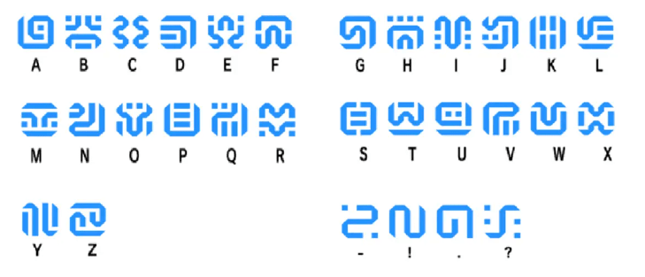
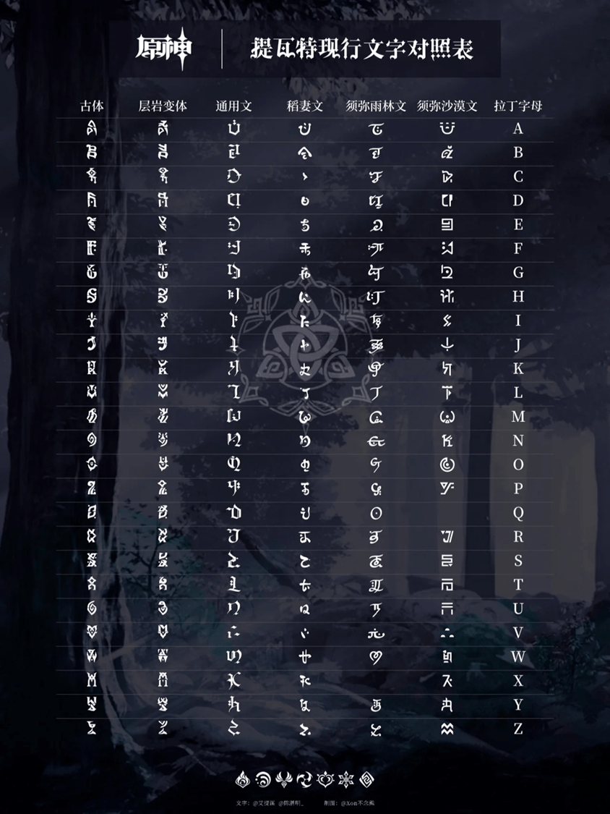
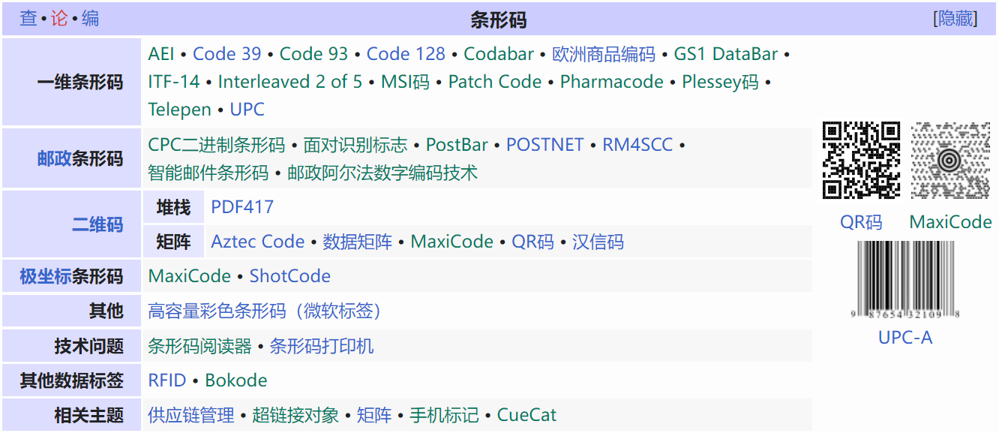
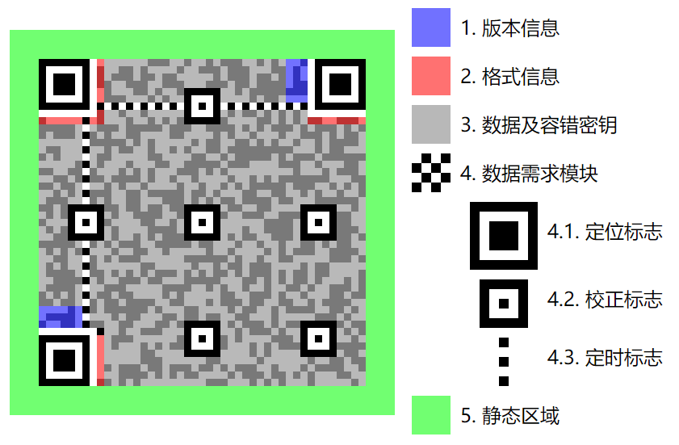
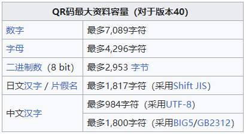
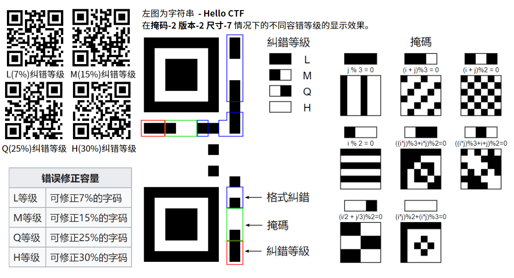

编码扩展¶
注意，阅读本篇之前，您需要先阅读 编码 章节的内容。
简述¶
在前面我们介绍了编码的基本概念，以及常见的编码方式，但在MISC这个脑洞大开，千奇百怪的分区下，显然基础的编码知识是不够用的，在这个板块我们会做以下补充：
- 进制与BASE家族的脚本扩展
- 现代受一些 不可抗力因素 (
指河蟹,一种居住于河边的螃蟹) 以及 各类文化元素 / 游戏 (塞尔达，启动！) / 甚至是抽象梗 的影响产生的 编码 或 类密码编码 (如：社会主义核心价值观编码，兽语，DNA编码，与佛论禅，希卡文，提瓦特大陆文字，阴阳怪气编码，真嘟假嘟编码....) - 代码混淆
- 图片码 (如：条形码，二维码）
- 一些简单编码的分析方式
进制¶
进位制 又称 进制 ，是一种记数方式，亦称 位置记法 （positional notation）、 数字命位法 [1]、定位记法 [2]、进位记数法、位值记数法（place-value notation）、位置数值系统（positional numeral system）；利用这种“记数法”，可以使用有限种“数字符号”来表示所有的数值。
—— 中文wiki——进位制
二进制¶
在MISC中，针对二进制的脑洞是比较多的，二进制由 0 和 1 组成：
- 【脑洞联想】两种状态的表示很容易联系到其他编码 如 摩尔斯电码（
还有黑丝白丝（？），二维码 ( 两种色块 )；再进一步，黑白色块或者黑白两种颜色的图片排布等等。 - 【数据表示】作为计算机领域最底层的基础，二进制与数据转换和表示密切相关，比如 字符可以通过ASCII码表转换成对应
x位二进制。 - 【古今结合】二进制与中国的太极 八卦等古代思想有很大相似之处。（如：[LitCTF 2023]两仪生四象）
十六进制¶
BASE 家族扩展¶
考虑到MISC板块的特性——选手需要一定的脚本写作能力，所以我们在这里对base家族做一些扩展：
-
使用python完成base64 encode/decode
-
非标准（换表）base64
-
base64隐写
编码解码¶
在编码部分我们其实已经介绍过了base家族的一些知识，并且拿Base64来举例说明了编码过程，下面是python原生编码解码的示例。
class CustomBase64:
CHAR_SET = "ABCDEFGHIJKLMNOPQRSTUVWXYZabcdefghijklmnopqrstuvwxyz0!@#$%^&*()-"
@classmethod
def encode(cls, s: str) -> str:
binary_str = ''.join(format(ord(c), '08b') for c in s) # 转化为二进制字符串
padding = 3 - (len(s) % 3) if len(s) % 3 else 0 # 计算需要的填充
binary_str += '0' * (padding * 8)
index_strs = [binary_str[i:i + 6] for i in range(0, len(binary_str), 6)]
encoded = ''.join(cls.CHAR_SET[int(index_str, 2)] for index_str in index_strs)
return encoded[:-padding] + "=" * padding # 添加填充
@classmethod
def decode(cls, s: str) -> str:
padding = s.count('=')
s = s.rstrip('=')
binary_str = ''.join(format(cls.CHAR_SET.index(c), '06b') for c in s) # 转化为二进制字符串
byte_strs = [binary_str[i:i + 8] for i in range(0, len(binary_str), 8)][:-padding]
decoded = ''.join(chr(int(byte_str, 2)) for byte_str in byte_strs)
return decoded
在python中可以直接使用base64包对base家族进行encode和decode操作，比如密文 U3F1ZGd5IGZleiwgYmxhbmsgamltcCBjcnd0aCB2b3g=
C:\Users\Probius>python
Python 3.8.1 (tags/v3.8.1:1b293b6, Dec 18 2019, 23:11:46) [MSC v.1916 64 bit (AMD64)] on win32
Type "help", "copyright", "credits" or "license" for more information.
>>> import base64
>>> print(base64.b64decode("U3F1ZGd5IGZleiwgYmxhbmsgamltcCBjcnd0aCB2b3g="))
b'Squdgy fez, blank jimp crwth vox'
>>>
当然，这种过程，平时交给工具就好了，如果有考点主要还是在base64换表上（写到这笔者想起当时刚入门CTF的时候base64换表都还算比较热门的考点来着，#现在好像见不到了）。
Base64 换表¶
通过阅读 编码 章节中base64的编码解码过程，其实 换表 不难理解。
base64有多个表，常用的标准表为 ABCDEFGHIJKLMNOPQRSTUVWXYZabcdefghijklmnopqrstuvwxyz0123456789+/ 不过，如果不考虑base64使用需求，我们可以打乱这个表，也可以用另外的标准ASCII字符来替换这个表，只要满足表中有64个标准元素即可。
比如 已知密文“ SGVsbG*sIFdvcmxkIQ== ”，自定义表“ ABCDEFGHIJKLMNOPQRSTUVWXYZabcdefghijklmnopqrstuvwxyz0!@#$%^&*()- ”，如何求原文呢？
C:\Users\Probius>python
Python 3.8.1 (tags/v3.8.1:1b293b6, Dec 18 2019, 23:11:46) [MSC v.1916 64 bit (AMD64)] on win32
Type "help", "copyright", "credits" or "license" for more information.
>>> import base64
>>> print(base64.b64decode("SGVsbG*sIFdvcmxkIQ==".translate(str.maketrans("ABCDEFGHIJKLMNOPQRSTUVWXYZabcdefghijklmnopqrstuvwxyz0!@#$%^&*()-", "ABCDEFGHIJKLMNOPQRSTUVWXYZabcdefghijklmnopqrstuvwxyz0123456789+/"))).decode('utf-8'))
Hello, World!
>>>
通常我们使用标准表作为媒介，转换后进行映射即可。
Base64 隐写¶
在前面base64解码过程，我们这样写道：
密文： R28=
去掉=：R28
ABCDEFGHIJKLMNOPQRSTUVWXYZabcdefghijklmnopqrstuvwxyz0123456789+/
-----------------↑------------------------------------↑-----↑---
----------------17-----------------------------------54-----60--
对应表位置： 17 54 60
还原为6位二进制 ： 010001 110110 111100
重新分组为8位二进制： 01000111 01101111 00
8位二进制转换为对应ASCII码： G o /(丢弃不完整部分)
得到原文：Go
我们可以看到 后面不足8位的二进制是被丢弃的，而按照base64的编码过程，后面最多留出两个等号即 4个二进制位。
比如我们要将 a 隐藏进字符串 helo 和 word中：
先对他们进行base64编码可以得到：
然后依照表格对应出下标的十进制和二进制：
而对于我们要隐写的a，使用8位二进制表示为 0110 0001
下面我们将隐写数据替换到后面4个隐写位置后再查表替换
此时base64编码变更：
可以看到对其解码的结果没有变化，因为==占位的部分会被直接忽略掉。

想要还原他我们只需要将密文base64先解码再编码 得到没有隐写的base64后 与密文比较即可。
# |后面部分将被截断
helo -> aGVsbw== 11|0000
helo'-> aGVsb2== 11|0110
offset = 6 (0110) [helo' - helo = 6]
word -> d29yZA== 00|0000
word'-> d29yZB== 00|0001
offset = 1 (0001) [word - word' = 1]
当然也可以使用脚本:
import base64
b64chars = 'ABCDEFGHIJKLMNOPQRSTUVWXYZabcdefghijklmnopqrstuvwxyz0123456789+/'
def decode_steganography(stegb64_list):
bin_str = ''
for line in stegb64_list:
stegb64 = ''.join(line.split())
decoded = base64.b64decode(stegb64)
rowb64 = base64.b64encode(decoded).decode('utf-8')
rowb64 = ''.join(rowb64.split())
offset = abs(b64chars.index(stegb64.replace('=', '')[-1]) - b64chars.index(rowb64.replace('=', '')[-1]))
equalnum = stegb64.count('=')
if equalnum:
bin_str += bin(offset)[2:].zfill(equalnum * 2)
return ''.join([chr(int(bin_str[i:i + 8], 2)) for i in range(0, len(bin_str), 8)])
stegb64_list = ['aGVsb2==', 'd29yZB==']
decoded_message = decode_steganography(stegb64_list)
print(decoded_message)
# a
文本混淆¶
-
社会主义核心价值观编码 ：https://github.com/sym233/core-values-encoder
-
与佛论禅：
源版：https://www.keyfc.net/bbs/tools/tudoucode.aspx
GitHub开源重制：https://github.com/takuron/talk-with-buddha
（一定意义上反映了互联网和misc的抽象发展......）
密码类编码¶
DNA编码¶
idea：https://www.geeksforgeeks.org/dna-protein-python-3/
轮子：https://github.com/karma9874/DNA-Cipher-Script-CTF
希卡文¶

提瓦特大陆文字¶

代码混淆¶
原文：test
-
jsfuck ：
(!![]+[])[+[]]+(!![]+[])[!+[]+!+[]+!+[]]+(![]+[])[!+[]+!+[]+!+[]]+(!![]+[])[+[]] -
Brainfuck ：
+++++ +++++ [->++ +++++ +++<] >++++ +++++ +++++ ++.<+ ++[-> ---<] >---- --.<+ ++[-> +++<] >++++ +.+.< -
JJEncode ：
_=~[];_={___:++_,$$$$:(![]+"")[_],__$:++_,$_$_:(![]+"")[_],_$_:++_,$_$$:({}+"")[_],$$_$:(_[_]+"")[_],_$$:++_,$$$_:(!""+"")[_],$__:++_,$_$:++_,$$__:({}+"")[_],$$_:++_,$$$:++_,$___:++_,$__$:++_};_.$_=(_.$_=_+"")[_.$_$]+(_._$=_.$_[_.__$])+(_.$$=(_.$+"")[_.__$])+((!_)+"")[_._$$]+(_.__=_.$_[_.$$_])+(_.$=(!""+"")[_.__$])+(_._=(!""+"")[_._$_])+_.$_[_.$_$]+_.__+_._$+_.$;_.$$=_.$+(!""+"")[_._$$]+_.__+_._+_.$+_.$$;_.$=(_.___)[_.$_][_.$_];_.$(_.$(_.$$+"\""+_.__+_.$$$_+"\\"+_.__$+_.$$_+_._$$+_.__+"\"")())();
- AAEncode
ﾟωﾟﾉ= /｀ｍ´）ﾉ ~┻━┻ //*´∇｀*/ ['_']; o=(ﾟｰﾟ) =_=3; c=(ﾟΘﾟ) =(ﾟｰﾟ)-(ﾟｰﾟ); (ﾟДﾟ) =(ﾟΘﾟ)= (o^_^o)/ (o^_^o);(ﾟДﾟ)={ﾟΘﾟ: '_' ,ﾟωﾟﾉ : ((ﾟωﾟﾉ==3) +'_') [ﾟΘﾟ] ,ﾟｰﾟﾉ :(ﾟωﾟﾉ+ '_')[o^_^o -(ﾟΘﾟ)] ,ﾟДﾟﾉ:((ﾟｰﾟ==3) +'_')[ﾟｰﾟ] }; (ﾟДﾟ) [ﾟΘﾟ] =((ﾟωﾟﾉ==3) +'_') [c^_^o];(ﾟДﾟ) ['c'] = ((ﾟДﾟ)+'_') [ (ﾟｰﾟ)+(ﾟｰﾟ)-(ﾟΘﾟ) ];(ﾟДﾟ) ['o'] = ((ﾟДﾟ)+'_') [ﾟΘﾟ];(ﾟoﾟ)=(ﾟДﾟ) ['c']+(ﾟДﾟ) ['o']+(ﾟωﾟﾉ +'_')[ﾟΘﾟ]+ ((ﾟωﾟﾉ==3) +'_') [ﾟｰﾟ] + ((ﾟДﾟ) +'_') [(ﾟｰﾟ)+(ﾟｰﾟ)]+ ((ﾟｰﾟ==3) +'_') [ﾟΘﾟ]+((ﾟｰﾟ==3) +'_') [(ﾟｰﾟ) - (ﾟΘﾟ)]+(ﾟДﾟ) ['c']+((ﾟДﾟ)+'_') [(ﾟｰﾟ)+(ﾟｰﾟ)]+ (ﾟДﾟ) ['o']+((ﾟｰﾟ==3) +'_') [ﾟΘﾟ];(ﾟДﾟ) ['_'] =(o^_^o) [ﾟoﾟ] [ﾟoﾟ];(ﾟεﾟ)=((ﾟｰﾟ==3) +'_') [ﾟΘﾟ]+ (ﾟДﾟ) .ﾟДﾟﾉ+((ﾟДﾟ)+'_') [(ﾟｰﾟ) + (ﾟｰﾟ)]+((ﾟｰﾟ==3) +'_') [o^_^o -ﾟΘﾟ]+((ﾟｰﾟ==3) +'_') [ﾟΘﾟ]+ (ﾟωﾟﾉ +'_') [ﾟΘﾟ]; (ﾟｰﾟ)+=(ﾟΘﾟ); (ﾟДﾟ)[ﾟεﾟ]='\\'; (ﾟДﾟ).ﾟΘﾟﾉ=(ﾟДﾟ+ ﾟｰﾟ)[o^_^o -(ﾟΘﾟ)];(oﾟｰﾟo)=(ﾟωﾟﾉ +'_')[c^_^o];(ﾟДﾟ) [ﾟoﾟ]='\"';(ﾟДﾟ) ['_'] ( (ﾟДﾟ) ['_'] (ﾟεﾟ+(ﾟДﾟ)[ﾟoﾟ]+ (ﾟДﾟ)[ﾟεﾟ]+(ﾟΘﾟ)+ ((o^_^o) +(o^_^o))+ (ﾟｰﾟ)+ (ﾟДﾟ)[ﾟεﾟ]+(ﾟΘﾟ)+ (ﾟｰﾟ)+ ((ﾟｰﾟ) + (ﾟΘﾟ))+ (ﾟДﾟ)[ﾟεﾟ]+(ﾟΘﾟ)+ ((o^_^o) +(o^_^o))+ (o^_^o)+ (ﾟДﾟ)[ﾟεﾟ]+(ﾟΘﾟ)+ ((o^_^o) +(o^_^o))+ (ﾟｰﾟ)+ (ﾟДﾟ)[ﾟoﾟ]) (ﾟΘﾟ)) ('_');
图片码¶
图：中文wiki-条形码
图片码通过维度来区分，可以分为 「 线性/一维 条形码 Barcode 」 和 「 矩阵/二维 条形码 Matrix (2D) barcodes 」 ,网络上对于两类条形码的分类标准有些杂乱，在国内，二维码 多指 QR code ，多数情况下均为狭义指代，并不指代广义上的 「 矩阵/二维 条形码 」 。读者要是感兴趣可以阅读 英文wiki - Barcode。
本文会沿用国内的解释风格，重点介绍二维码。
条形码¶
「 条形码 / 条码 Barcode」 ，是将宽度不等的多个黑条和空白，按照一定的编码规则排列，用以表达一组信息的图形标识符。
作为最先出世的图形码，条形码在国际上已有一个庞大的标准库，在CTF中出现的频率并不高，同编码一样，搜索引擎能够解决大部分问题。读者无需刻意记忆。
二维码¶
二维码 也称为 二维条码、行动条码，是指在一维条码的基础上扩展出另一维具有可读性的条码，大多数使用黑白矩形图案表示二进制数据，也有一些使用其他形状（MaxiCode），或在黑白色二维码基础上使用颜色作为第三维度的种类（JAB Code），被设备扫描后可获取其中所包含的信息。二维码的种类很多，不同的机构开发出的二维码具有不同的结构以及编写、读取方法。常见的二维码有：
在国内，二维码通常指代QR码。
二维码在MISC中占比比较重，通常会结合其他知识点一同考察（包括隐写取证）。
结构
QR码最大特征为其左上，右上，左下三个大型的如同“回”字的黑白间同心方图案，为QR码识别定位标记，失去其中一个会影响识别。

二维码存储
QR码一共提供40种不同版本存储密度的结构，对应指示图的“版本信息”，版本1为 21×21 模块（模块为QR码中的最小单元），每增加一个版本，长宽各增加4个模块，最大的版本40为177×177模块。

容错修正
QR码有容错能力，即使图形破损仍然可以读取，破损面积最高可达30%。相对而言，QR码图形面积愈大，容错率愈高，所以一般折衷使用15%容错能力（M等级）。

在CTF中，二维码通常涉及的考察点有：
- 二进制转二维码
from PIL import Image
def generate_qrcode_from_binary(binary_str, img_size):
assert len(binary_str) == img_size[0] * img_size[1], "Size mismatch!"
pic = Image.new("RGB", img_size, color="white")
index = 0
for y in range(img_size[1]):
for x in range(img_size[0]):
if binary_str[index] == '1':
pic.putpixel([x, y], (0, 0, 0))
index += 1
return pic
# 示例二进制数据
binary_data = "1111111000100001101111111100000101110010110100000110111010100000000010111011011101001000000001011101101110101110110100101110110000010101011011010000011111111010101010101111111000000001011101110000000011010011000001010011101101111010101001000011100000000000101000000001001001101000100111001111011100111100001110111110001100101000110011100001010100011010001111010110000010100010110000011011101100100001110011100100001011111110100000000110101001000111101111111011100001101011011100000100001100110001111010111010001101001111100001011101011000111010011100101110100100111011011000110000010110001101000110001111111011010110111011011"
img_size = (25, 25)
qrcode = generate_qrcode_from_binary(binary_data, img_size)
qrcode.show()
qrcode.save("flag.png")
- 二维码修复
- 二维码拼接
使用到的工具：
- https://merri.cx/qrazybox/
- QR_Research
一些简单编码的分析方式¶
这里我们主要是介绍一些分析编码的小trick，以下面这题为例：
题目下发了一个misc.txt，内容如下：
REOREREREREREOREREREREREREOOOREOREREREREOREREREOREREREOOREOREREREREOREREREREREOREOREREREREOOREOREOREOOREREOOREOOREOREOREREREREOOREOREREREREREOREOOOREOREREREOREOOOOREREOREOREOOOREOREREREREREOREOOREOOREREOOREREREREREOREOREOOOOREREOOREREREOREREOOREREREOREREOREOOOOREREOREREREOREOREOREREOREREREREOOREREOOOREOOOREOREOREOREREOOOOREOREOOREREREREOOREOOREREREOOREOOREREREOREOREOREREREOOREREOOREREO
（你最多只能搜到一些奥利奥的视频，虽然这确实是本题编码的一个关键点）
一个很自然的想法是，这里面R，E，O应该各代表了一种含义，但是仔细观察我们会发现这么一些细节：
- E永远都会在R后面出现
- 虽然里面似乎出现了OO和OOO，但是更可能的一种编码方式是使用单个O
为什么一定是“O”而不是“OO”或“OOO”？
这里可以参考哈夫曼编码的特点，我们可以注意到这一串编码结果中没有任何空格，但是存在落单的O，说明落单的O一定是有含义的。
如果编码表中存在落单的O，那么假如存在OO(O)的编码，解析OO和OOO的时候就会出现一个问题：你无法得知这里的OO到底是2个落单的O还是1个OO（显然OOO也是同理的）
这也是无分隔符编码需要注意的一个细节：某个已经编码过的元素不能称为新的待编码元素的前缀或后缀。
所以我们可以大胆推测出如下观点：
- RE是一个整体，共同表示某种元素
- 编码表中只存在RE和O两种元素，也就是这里的编码表示的很可能是一种只含两种元素的替换型编码。
为什么更可能的是替换型而不是位移型？
其实原因很简单，如果被编码的元素是位移型编码的，最终的编码呈现出来不应该只出现2种元素。
比如如果原文是Hello CTF，经过密钥为3的凯撒位移密码结果应该为Khoor FWI，所以这里我们更倾向于使用的是替换型。
当然这个说法并不绝对，比如我可能已经提前把编码前的原文处理成了一种只有两种元素的新内容呢？
所以脑子不要太死板，misc手还是很需要脑洞的。
那么只含两种元素的编码有哪些呢？常见的比如说可能是摩斯电码，二进制等等，但是摩斯电码并不能省略停顿信息，所以这里我们优先尝试将其转换为二进制。
问题来了，RE和O谁是0谁是1呢？
这里注意到题目中暗示我们“读出来”，结合我们刚才搜到的奥利奥视频，我们大胆猜测，如果把OREO看成奥利奥饼干的话，那么O就是黑色，RE就是白色，根据灯泡的亮灭我们就可以大胆去猜：O就是0（灭），RE就是1（亮）。
Tip
作为misc手，大胆去猜，小心求证的观念是必不可少的。
按照上述规则解码后我们可以得到：
10111110111111000101111011101110010111101111101011110010101001100100101011110010111110100010111010000110101000101111101001001100111110101000011001110110011101101000011011101010110111100110001000101010110000101001111001001110010011101010111001100110
10111110 11111100 01011110 11101110 01011110 11111010 11110010 10100110 01001010 11110010 11111010 00101110 10000110 10100010 11111010 01001100 11111010 10000110 01110110 01110110 10000110 11101010 11011110 01100010 00101010 11000010 10011110 01001110 01001110 10101110 01100110
但是如果此时拿去转ASCII，我们只会得到一堆乱码，这是怎么回事？
这时候我们就需要再次发动我们的观察力了，我们可以注意到，这些二进制的末尾都是0，也就是说他们似乎都是偶数，这很反常。
毕竟，一个正常的ASCII字符串不应该出现这种情况，那我们该怎么处理呢？
这里我们需要注意一个细节，ASCII常见字符绝大多数都位于ASCII编码表的32~127，也就是二进制中的00100000~01111111之间。
注意到什么了吗？
是的，他们的开头都是0！
所以，这里我们可以大胆猜测出题人对字符串进行了反转操作，但具体是8位一组的反转还是整个字符串的反转……管他呢，就这两种常见的反转方式，都试试就是了。
Tip
作为misc手，不怕麻烦，动手去做也是必备的品质哦~
最后我们尝试发现，把整个字符串反转就能得到最终的flag：
最终的flag为furryCTF{Wanna_2_Eat_OReO_zwz?}。